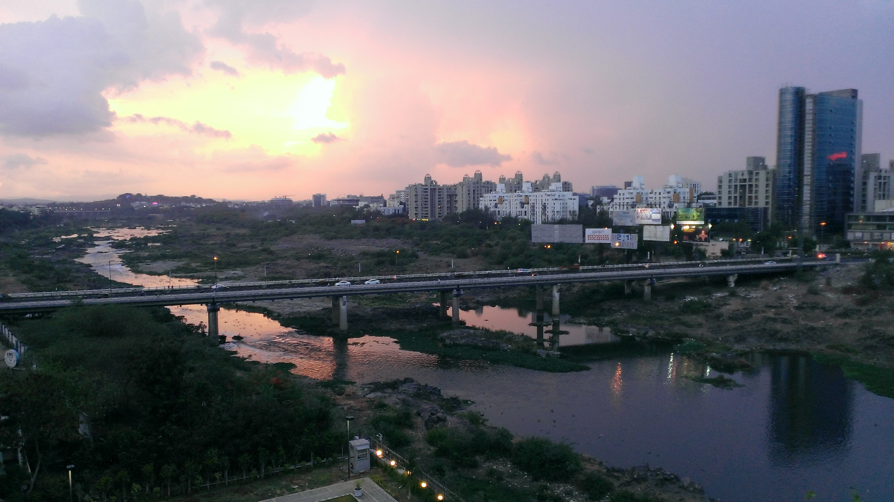

Pune, often dubbed the 'Oxford of the East,' has solidified its position
as a premier education hub in India. The city's rich tapestry of
educational institutions, ranging from renowned universities to
specialized colleges, caters to diverse academic interests. From
engineering and management to sciences and humanities, Pune offers a
plethora of courses. The city's conducive learning environment, marked by
a pleasant climate, excellent infrastructure, and a vibrant student
community, attracts aspirants from across the nation. Pune's emphasis on
research, innovation, and industry collaborations further enriches the
academic experience, making it a preferred destination for those seeking
quality education and promising career prospects.

Some of the best engineering colleges in Pune are:
If you are interested in any of the above colleges, fill this form.